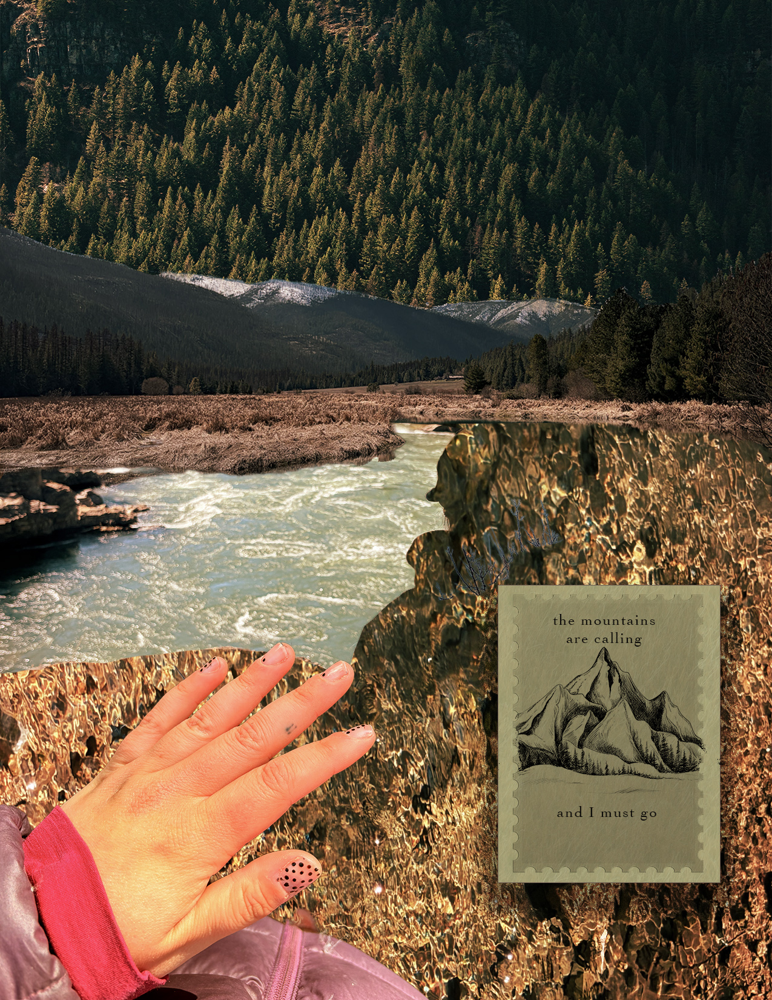

"Montana Through My Lens" Series
An exploration of regional identity combining bold typography grids, intimate framing, and rugged mountain textures.
← Back to Home Portfolio

Series Cover Design
Structural typography framing layered over sweeping alpine ridges and portraits.

Rearview Reflection Layout
Typographic quotes blocks paired alongside transit framing to showcase changing landscapes.

Mountain Signpost Overlay
Contrasting sunset hues and vector path highlights running across open valley plains.

"The Mountains Are Calling" Layer
Exploring rapid water current distortions juxtaposed with crisp vector illustration graphics.